Creación Bodega Marqués de Riscal
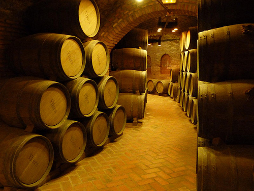Primeros Caldos Embotellados y Primeros Premios
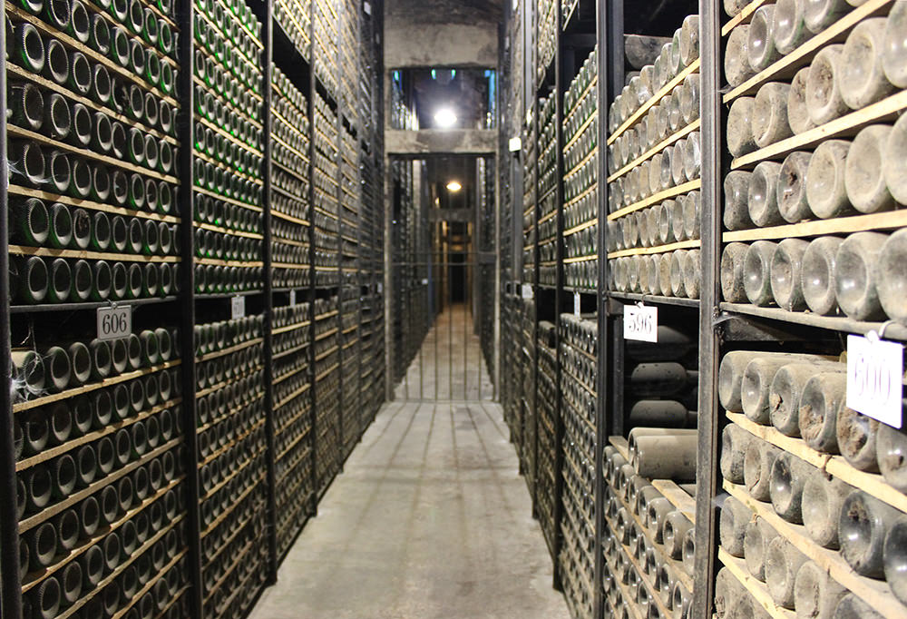Primera Ampliación Marqués de Riscal
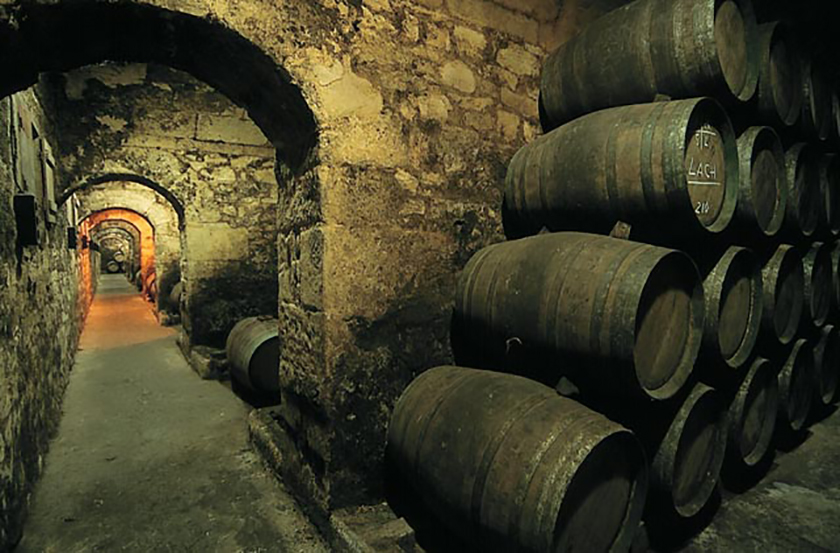Diploma de Honor en la Exposición de Burdeos
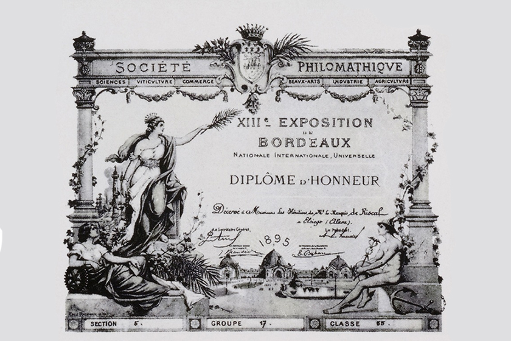Primeros Vinos Blancos en Rueda
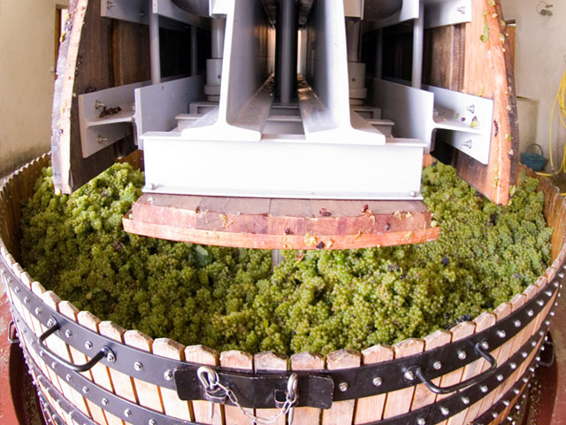Impulsor de la Denominación de Origen Rueda
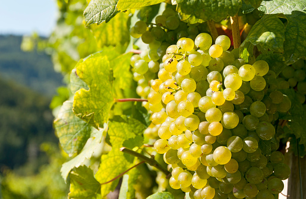Barón de Chirel,Primer Vino de Autor de Marqués de Riscal
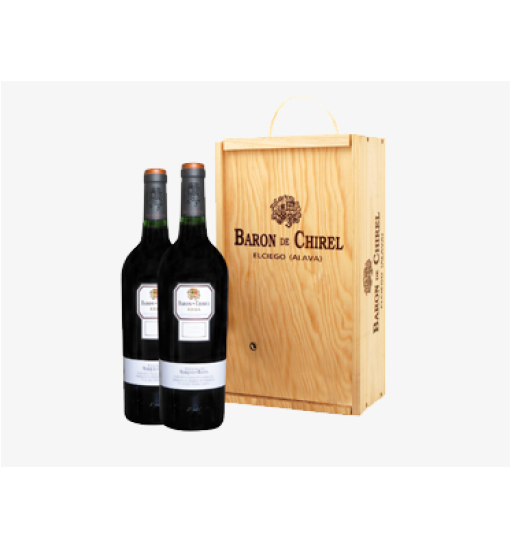Implantació de la Primera Mesa de Selección de la Rioja

Primera Añada de Riscal 1860
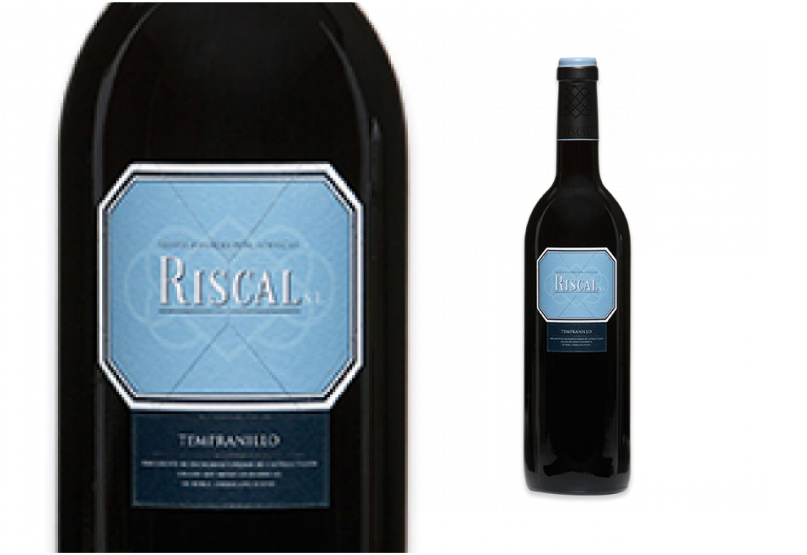Proyecto 2000, Ciudad del Vino
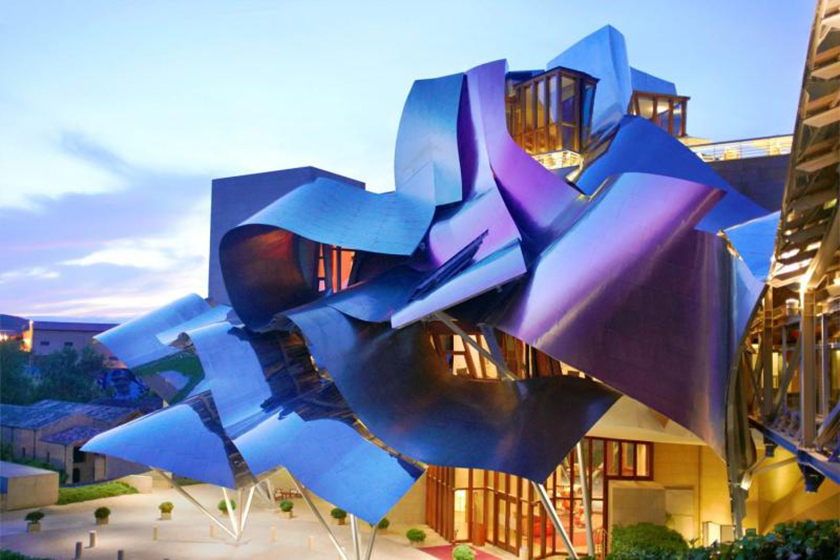Inauguración Ciudad del Vino
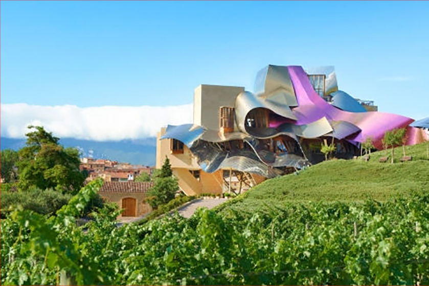150 Aniversario de Marqués de Riscal
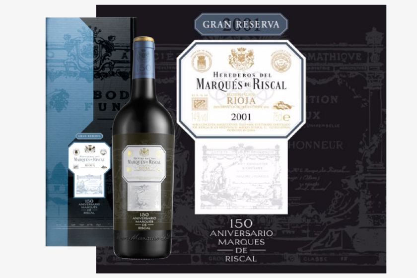Lanzamiento Finca Torrea y Finca Montico
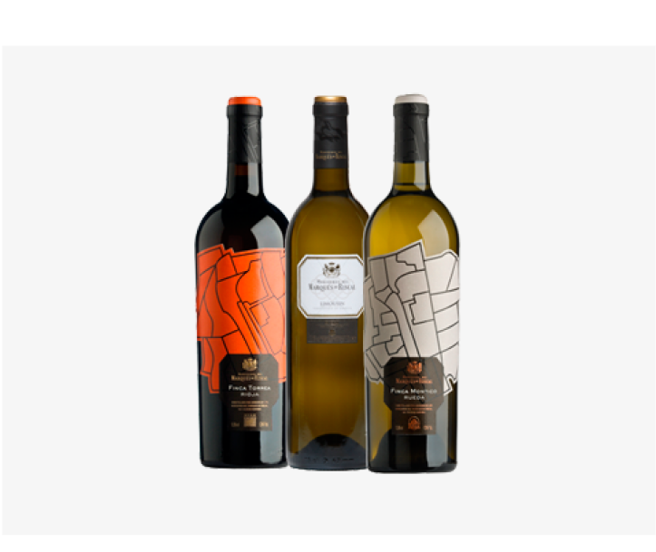Compra de la Bodega Pernord Ricard
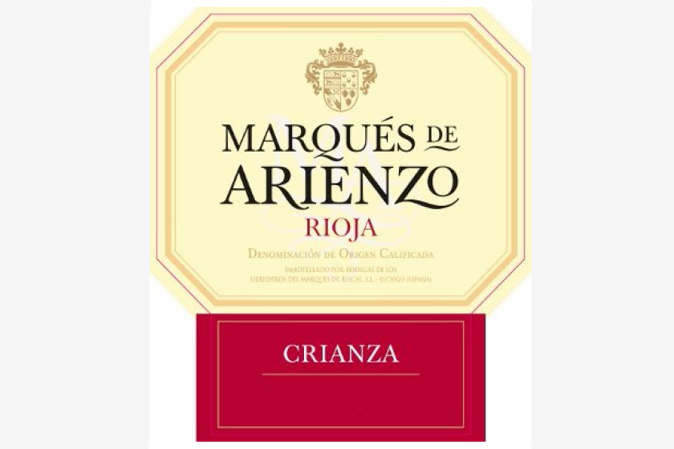Implementación de Nuevas Tecnologías
Estrella Michelin
Entre las 10 mejores Marcas
Marqués de Riscal la Mejor Bodega Europea por la revista Wine Enthusiast
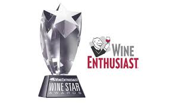A lo largo de su historia, Marqués de Riscal ha sido siempre una empresa innovadora, pionera y referente de un sector vitivinícola en continua transformación. Buscamos hacer vinos originales, frescos, elegantes y fáciles de beber.
Desde nuestra fundación, hemos tenido una clara vocación exportadora. Hoy día estamos presentes en más de 110 países a los que exportamos el 65% de nuestra producción.